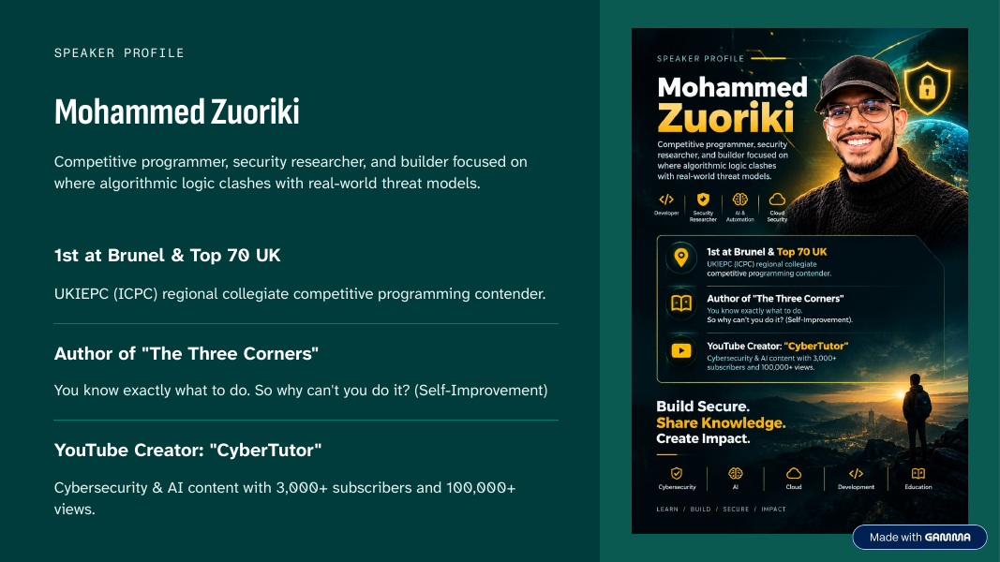

About the Speaker#
Mohammed Zuoriki#
Builder · Speaker · Author · Creator
Computer Science with Cybersecurity, Brunel University London
Mohammed is a competitive programmer, security researcher and builder who focuses on where algorithmic logic meets real-world threat models. He works across AI security and DevOps, and runs CyberTutor, a cybersecurity education platform that reaches thousands of learners.

Leadership & Community#
Beyond technology, Mohammed cares about leadership, communication and community. He is the President of the Brunel Cybersecurity Society (BCSS) and a public speaker representing Brunel University London, having addressed audiences of more than 200 people. He has taken part in 8+ hackathons and technology events, working with others on challenges across technology, business and social impact.
Brunel Cybersecurity Society#
Founder and President, building a student community around practical security skills.
Public speaking#
Representing Brunel at events, including this guest talk for OWASP University of Exeter.
Competitive programming#
1st at Brunel and Top 70 in the UK at the UKIEPC, the regional round of the ICPC.
Hackathons#
8+ hackathons and technology events across technology, business and social impact.
Educational Platforms & Resources#
Much of Mohammed's work outside engineering goes into CyberTutor, a cybersecurity education platform that spans a YouTube channel, a newsletter, a published book and productivity templates.
CyberTutor#
Practical, beginner-friendly walkthroughs on cybersecurity, ethical hacking, threat intelligence and cloud security. Learn, practise, protect.
Cyber News#
Breach case studies, news from the cyber world, and long-form articles on breaking into cybersecurity.
The Three Corners#
Brain · Body · Soul: a practical guide to building balance, discipline and purpose. Available on Amazon Kindle.
Your Second Cyber Brain#
An all-in-one Notion dashboard for organising cybersecurity learning, with course tracking, a to-do system, goals and daily habit-building.
Profiles#
- LinkedIn: Mohammed Zuoriki
- GitHub: Code-tech77
- YouTube: CyberTutor
- Substack: Cyber News
Follow on GitHub and subscribe on YouTube for upcoming builds, tools, and cloud and security projects. Questions and collaboration invitations are always welcome.
Speaking#
| Event | Talk | Role | Date |
|---|---|---|---|
| OWASP University of Exeter Student Chapter | Hacking AI: The Security Risks Behind AI | Guest Talk Speaker | October 2026 |